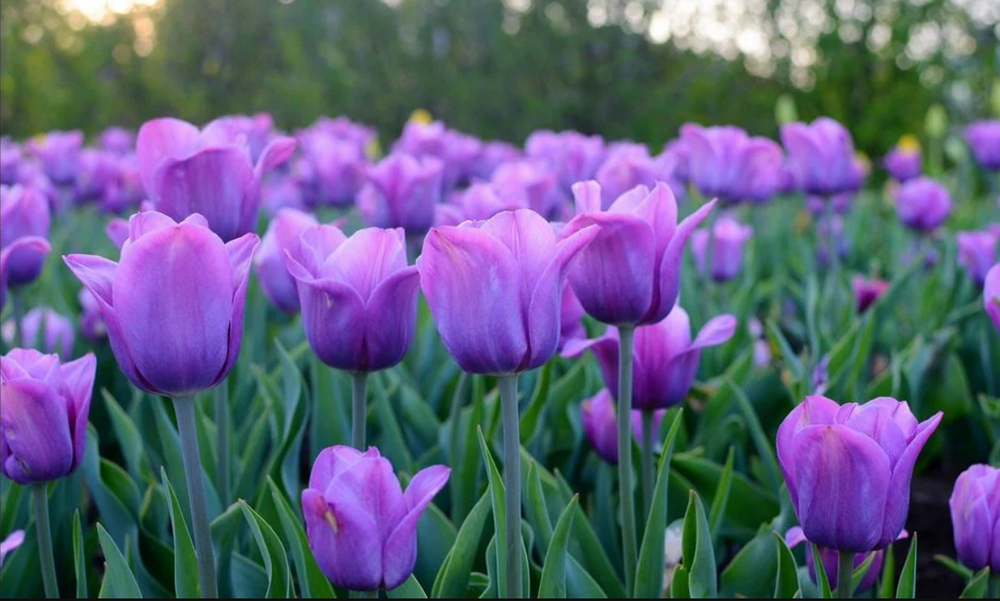
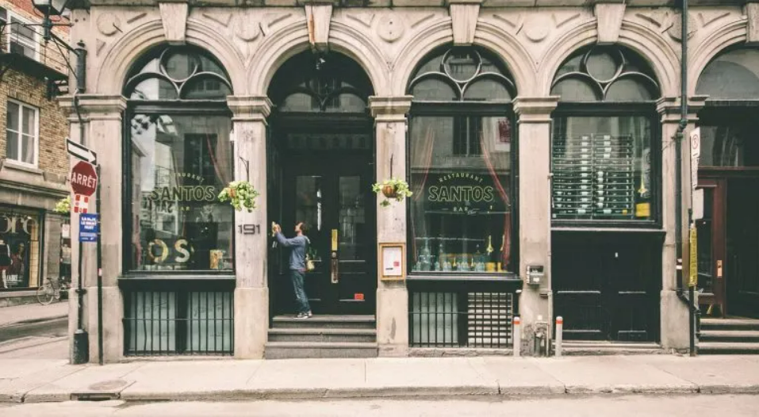
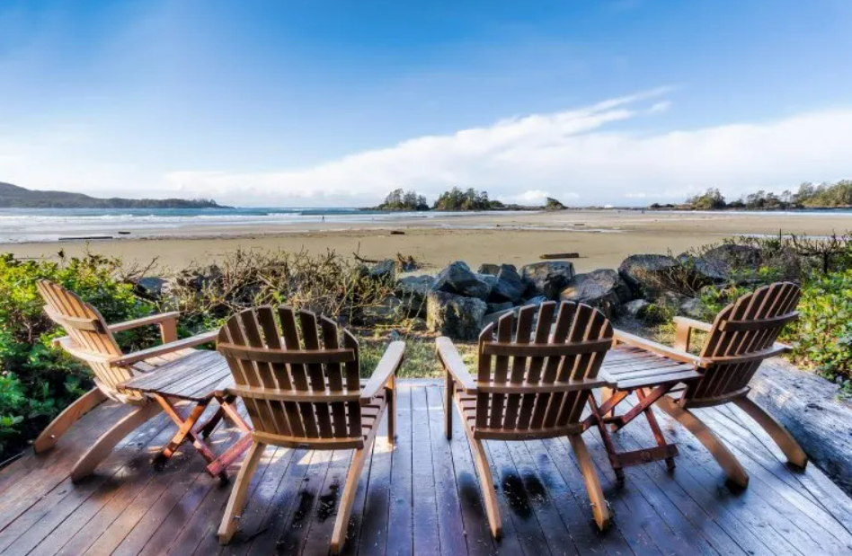
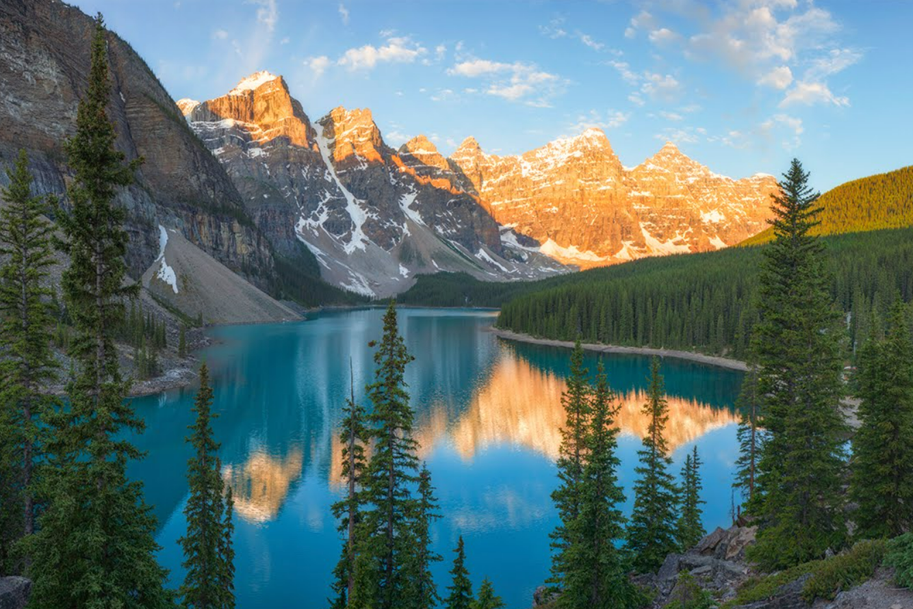
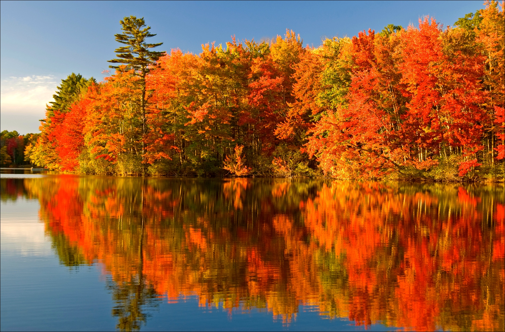
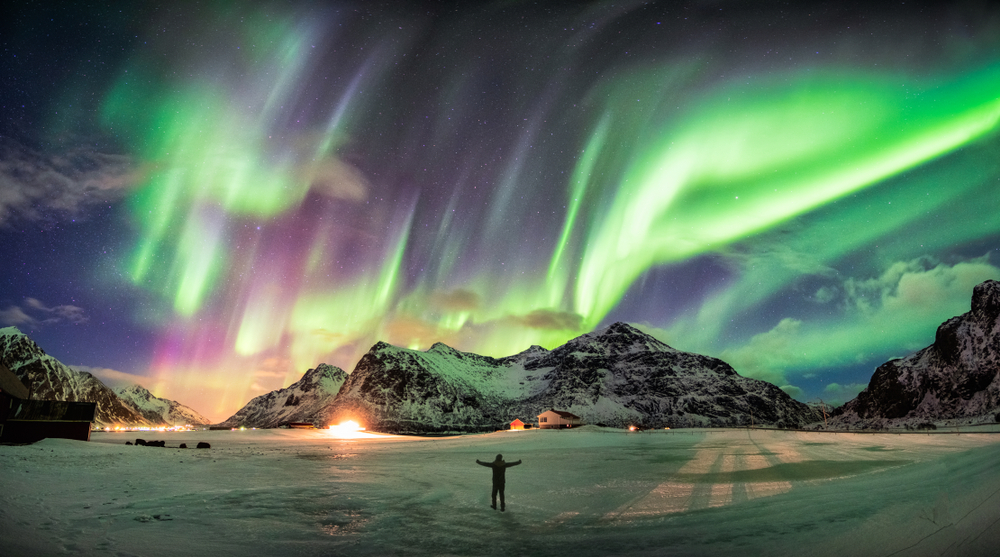
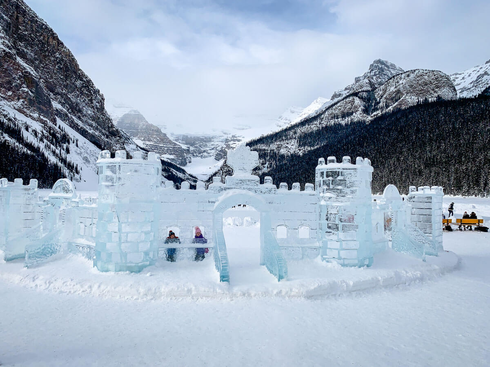

Seasons of Canada


{kind=link}
{kind=link}
{kind=link}
{kind=link}
{kind=link}
{kind=link}
Spring - March to May
This is when snow begins to melt and it gets warmer. There is often a lot of rain at this time of year. Days are warmer and longer but nights are still cool. Plants and grass begin to grow in the spring. Trees start to get leaves again in April or May. You will need a warm coat and possibly a hat, mittens and boots in the spring. An umbrella is also useful.
Summer - June to August / September
Daytime temperatures are usually above 20 degrees Celsius and can reach 30 degrees Celsius or higher in July. It can also be very humid in Durham during the summer. High humidity levels can make it feel much hotter, this temperature is usually called 'the humidex'. Mosquitoes, ticks and flies are common at this time of year. You should wear insect repellent if you are going to be outside. It is also smart to wear a hat and use sunscreen to prevent sunburn. Drinking water is always a good idea in the summer.
Fall - September to November
In the fall, days seem shorter as there are fewer hours of sunlight and the first frosts appear. Leaves turn from green to red, orange, yellow and brown before they fall from the trees. The weather during the fall is usually rainy and you can expect the first snow in November. Temperatures can change quickly from day to day but average around 20 degrees in September to 5 degrees in November. You may need a coat, mittens, hat and boots first thing in the morning but only a light jacket later in the day. It's also a good idea to carry an umbrella in November.
Winter - December to February or later
>Winter can seem long but it's also a time of year that can be a lot of fun as long as you dress well to go outdoors. Temperatures are typically around -10 to -15 degrees Celsius during the winter, though it can often feel much colder with the wind. Make sure everyone in your family has a warm hat that covers the ears, warm mittens and boots and a warm, thick coat that buttons or zips closed in the front. Boots with rubber soles are a good idea because they will keep you from slipping on ice and snow.
Subscribe for promotions and offers
The arrival of the spring equinox around 21st March signifies the official arrival of spring in Canada. The reality can sometimes feel a little different in the Great White North but nonetheless, spring is a great time of year to travel Canada. Most visitors to Canada arrive in the months of July and August so March to June is considered a ‘shoulder’ season. Travelling Canada in spring is quieter and more affordable. In this comprehensive guide, discover the highlights of visiting Canada in spring as well as top travel destinations and spring travel advice.
Unique things to do in Canada in spring
Spring blossoms
There is no doubt that the first bud of spring is highly anticipated across Canada. Victoria is usually the first city to see spring flowers and blossoming trees. There are two types of spring flowers that are particularly coveted in Canada – tulips and cherry blossoms. As the rainy season finally fades, Vancouverites revel in the city’s beautiful cherry blossom season. The city was gifted 500 cherry trees by Japan in the 1930’s as a thank you for the service of Japanese Canadians in WWI. Vancouver now has over 40,000 cherry trees bursting with pink and white blooms every April and a Cherry Blossom Festival to celebrate the season. Cherry blossoms can also be seen in Toronto’s High Park.
The world’s largest tulip festival takes place in Ottawa every May. Ottawa’s tulip connection is also related to wartime, with tulip bulbs being gifted to Canada every year since WWII in thanks for sheltering the Dutch Royal Family. A number of indoor and outdoor downtown locations are transformed into tulip inspired spaces, celebrating the vibrant return of spring. Chilliwack, BC, also has a popular tulip festival.
Maple syrup season
With Canada having the largest maple syrup industry in the world, a trip to the sugar shack is a spring tradition for many Canadians. Harvest time usually runs from mid February into April, location and weather dependent. A touch of warmer weather is needed to prompt the trees to turn stored starch back into sugar, ready for ‘tapping’ (a surprisingly easy process) by maple syrup farmers.
Maple farms across Quebec, Ontario and New Brunswick (plus a scattering across every province) celebrate the start of the season by offering delicious maple themed breakfasts, maple taffy on snow, sugar making demonstrations, woodland wagon rides and more. One of the most unique maple traditions has to be the ‘licherie‘ in Northeastern New Brunswick. It involves dipping a long wooden stick into a boiling pot of maple syrup and then using a smaller stick to scrape off the (rapidly cooling) maple syrup. We tried it at Sucherie Chiasson in Paquetville.
Booked trips for Summer
Unique things to do in Canada in Summer
Montreal
Montreal is the heart of the French-speaking region of Quebec and home to the country’s best servings of poutine. When you’re not walking the cobbled streets looking to line your belly with the fries and cheese curd dish, you can also tick off famous sites like the Notre-Dame, Montreal Biodome and Mount Royal.
Visiting this Canadian city in summer also means you can lay out on the Jean-Dore Beach, ride along Lachine Canal and make sure you’ve sufficiently piled on the pounds by grabbing gelato at the Atwater Market.
Cottage country
A few hours north of Toronto, you’ll find what’s known as cottage country and it’s every bit as quaint as it sounds, making it the ideal place to unwind for a week.
Celebs have the same idea and flock to the Muskoka district to escape, but places like Wolf Den Nature Retreat Hostel and Dream Catcher B&B manage to make it affordable for the rest of us. Tick off the Muskoka lakes and waterfalls in parks like Arrowhead Provincial, Georgian Bay Islands and Six Mile Lake and, when you want to amp things up, try one of the many water activities like paddleboarding, waterskiing or canoeing.
Booked trips for summer
Unique things to do in Canada in Falls
Alberta's Rocky Mountains
Alberta is home to some of Canada’s most beautiful mountain scenery, with the dramatic Rockies even more stunning in the fall. The area typically experiences relatively warm, dry weather in September and October, while the biggest crowds of the year have left, and visitors have a better chance of finding solitude while taking in the yellows of the aspens and the reds sub-alpine larch trees. One of the best ways to experience it is to hike the 13-mile-long Banff Legacy Trail while watching for wildlife along the way. Other options include mountain biking, overnight horseback riding excursions, and even dinner trains that roll through the colorful trees. It’s easy to find solitude with summer tourists gone and spots for drinking up all of the colors of the aspens and sub-alpine larch. Alberta is renowned for its golden larch trees that are transformed into blazing hues of yellow in the fall.
Algonquin Provincial Park, Ontario
Algonquin Provincial Park offers outdoor adventures year-round in a spectacular landscape that spans 4,750 miles and includes forests, rolling hills, and lakes, and is dotted by the solitary moose. The trees burst into color between late September and early October, the perfect backdrop for exploring the thousands of rivers and lakes. It’s an ideal place to lose yourself in the wilderness where silence is broken only by the songs of the birds, the ripple of the water, and the occasional rustling of the leaves.
Booked trips
Unique things to do in Canada in Winter
Northern Lights
When it comes to classic winter vacations in Canada, viewing the aurora borealis is, well, up there. Also known as the Northern Lights, this natural phenomenon occurs when the sun’s electrically charged particles collide with gases upon entering the earth’s atmosphere. The resulting display of colourful dancing lights on clear, cold nights continues to draw travellers from around the world to Canada’s north. The aurora borealis’ constantly changing appearance is now matched by the many ways to see it. Spy the light show from the cozy comfort of a private glass chalet at Northern Lights Resort & Spa in the Yukon or from teepee village after a gourmet three-course meal at the Aurora Dining Experience in the Northwest Territories (currently under review for the Winter 2020/21 season) or plexiglass bubble called an Aurora Dome 20 minutes away from the northern Manitoba town of Churchill.
Lake Louise
Located inside the Banff National Park is the turquoise blue waters of Lake Lousie. During winter, the frozen lake is like a little town in itself. You can ice skate in the natural rink, against the mountain backdrop. Located close by is the Lake Lousie Chateau – stay here for stunning winter views from your suite. There are ice skating rentals and indoor rink at the chateau. You can also hop on a shuttle to head to the Lake Louise Ski Resort from here! Book a skiing lesson in Lake Louise In January, Lake Lousie hosts the Ice Sculpture Festivals, which delights visitors every year. This event is free to enter and enjoy. If you are planning to embark on a road trip to enjoy the Canadian Rockies, including Lake Lousie, ensure you check the weather forecasts/road conditions before travel. Always add car insurance for the duration of your trip.